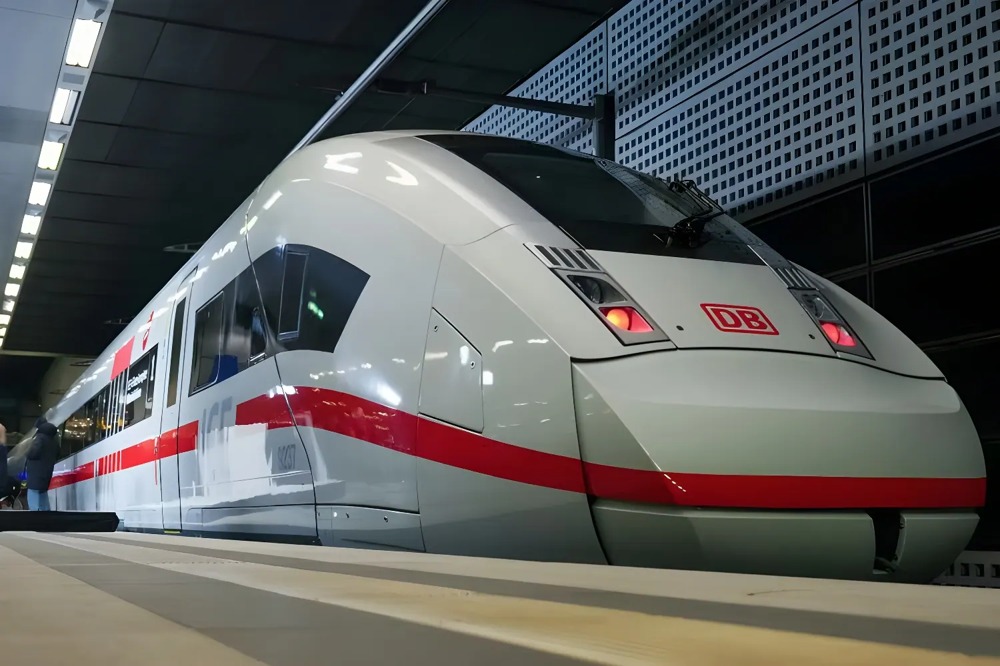

Depuis le 1er mai 2026, la compagnie ferroviaire nationale allemande s'est engagée à ne pas augmenter ses tarifs longue distance pendant douze mois consécutifs. Une décision qui rompt avec des années de hausses régulières, et qui intervient alors que la Deutsche Bahn accumule les déficits et que la confiance des voyageurs s'est sérieusement effilochée. Entre geste politique et stratégie de reconquête, ce gel tarifaire interroge le modèle du service public ferroviaire en Allemagne.
Depuis le 1er mai 2026, la Deutsche Bahn (DB) s'est officiellement engagée à maintenir stables l'ensemble de ses tarifs longue distance pour une durée de douze mois. Cette mesure couvre la totalité des billets — Flexpreis, Sparpreis et Super-Sparpreis — sur toutes les lignes ICE, IC et EC du territoire allemand. Les prix des BahnCards (25 et 50) sont également maintenus à leur niveau actuel. Evelyn Palla, directrice du transport longue distance de la DB, a présenté cette décision comme un « nouveau départ », avec pour objectif déclaré de redonner aux voyageurs une visibilité sur leurs dépenses dans un contexte économique incertain.
Ce gel est d'autant plus notable qu'il constitue une rupture nette avec les habitudes tarifaires de la compagnie. Ces dernières années, la Deutsche Bahn avait systématiquement ajusté ses prix à chaque changement d'horaire de mi-décembre. Fin 2024, les tarifs flexibles avaient ainsi progressé en moyenne de 5,9 %. Fin 2025, la hausse avait déjà été suspendue — une première. Le gel de mai 2026 approfondit cette rupture et l'inscrit dans la durée.
Derrière l'annonce se cache une réalité difficile. La Deutsche Bahn est confrontée à une crise ouverte sur deux fronts. D'un côté, son image auprès des voyageurs est dégradée : en 2025, seulement 60 % de ses trains longue distance sont arrivés à l'heure, contre 79 % encore en 2016. La fiabilité du réseau, longtemps perçue comme une fierté nationale, est devenue un sujet de dérision dans le débat public allemand. De l'autre, les comptes de la compagnie sont dans le rouge : la DB a enregistré en 2025 son troisième déficit annuel consécutif, à hauteur de 2,3 milliards d'euros, et perd structurellement environ 500 millions d'euros chaque année.
Face à ce double échec — qualité de service et rentabilité — augmenter les prix devenait politiquement et commercialement intenable. Le gel tarifaire est donc autant une concession aux voyageurs qu'un signal envoyé à l'État fédéral, actionnaire à 100 % de la DB, qui s'interroge sur l'avenir du modèle ferroviaire public.
Hausse des Flexpreise de +5,9 % en moyenne lors du changement d'horaire hivernal. Les Sparpreise restent stables.
Lors du changement d'horaire, la DB renonce pour la première fois à toute hausse tarifaire sur le longue distance — une rupture remarquée.
Le Deutschlandticket passe de 58 à 63 euros par mois — une hausse décidée conjointement par le gouvernement fédéral et les Länder, distincte de la politique tarifaire DB.
Annonce officielle du gel tarifaire longue distance pour douze mois. Evelyn Palla évoque un « nouveau départ » pour la DB.
Il convient toutefois de nuancer la portée de ce geste. Le gel ne concerne que les trajets longue distance (ICE, IC, EC). Dans le transport régional, de nombreux réseaux allemands ont d'ores et déjà augmenté leurs tarifs en début d'année 2026. Le Deutschlandticket, le pass mensuel national permettant de voyager librement sur tous les transports en commun locaux et régionaux, a lui aussi vu son prix progresser, passant de 58 à 63 euros en janvier 2026 — une décision prise par le gouvernement fédéral et les Länder, et non par la DB seule. La nouvelle coalition CDU/CSU–SPD a néanmoins annoncé le maintien de ce dispositif jusqu'en 2029, avec des hausses « progressives et socialement acceptables » attendues après cette date.
Par ailleurs, les billets vélo et certaines options de transport régional continuent de s'alourdir. Le gel est donc sélectif : il protège le voyageur du train grande vitesse, mais n'immunise pas l'ensemble du réseau contre les pressions inflationnistes.
| Tarif / Produit | Situation en 2026 | Évolution |
|---|---|---|
| Flexpreis (ICE/IC/EC) | Gelé jusqu'à mai 2027 | 0 % |
| Sparpreis / Super-Sparpreis | Gelé jusqu'à mai 2027 | 0 % |
| BahnCard 25 / 50 | Gelée jusqu'à mai 2027 | 0 % |
| Deutschlandticket | 63 € / mois (depuis janv. 2026) | +8,6 % |
| Billets régionaux / Ländertickets | Hausse variable par réseau | ↑ selon réseau |
Le gel intervient dans un environnement économique particulièrement instable. La volatilité des marchés de l'énergie — entretenue par la guerre au Moyen-Orient et la poursuite du conflit en Ukraine — pèse sur les budgets des ménages comme sur les coûts d'exploitation ferroviaire. C'est précisément dans ce contexte que la direction de la DB a choisi de faire le contraire de ses concurrents et de ses habitudes : absorber elle-même le risque tarifaire plutôt que de le répercuter sur les voyageurs. La compagnie estime que le manque à gagner représentera environ 250 millions d'euros sur l'année.
Les analystes y voient une manœuvre à double tranchant. D'un côté, elle peut reconquérir une clientèle qui avait déserté les trains au profit de la voiture ou des compagnies aériennes low-cost. De l'autre, elle aggrave à court terme une situation financière déjà précaire, dans une entreprise qui peine à financer la modernisation de son infrastructure et dont le retard en matière de ponctualité reste structurel.
Le gel des prix de la Deutsche Bahn n'est pas seulement un geste commercial : c'est le symptôme d'un système ferroviaire en tension entre ambitions de service public, impératifs financiers et attentes d'une société qui réclame des transports fiables et accessibles. En choisissant d'absorber le choc tarifaire plutôt que de le transférer aux voyageurs, la DB fait le pari que la confiance se reconstruit par les actes. Mais cette confiance ne se restaurera durablement qu'à condition que la ponctualité suive — or sur ce terrain, le chantier reste immense. Ce gel est un sursis. Son véritable test ne sera pas tarifaire : il sera opérationnel.
Seit dem 1. Mai 2026 hat die Deutsche Bahn zugesagt, ihre Fernverkehrspreise für zwölf Monate stabil zu halten. Eine Entscheidung, die mit Jahren regelmäßiger Erhöhungen bricht — und die fällt, während die DB tiefrote Zahlen schreibt und das Vertrauen der Fahrgäste auf einem Tiefpunkt liegt.
Seit dem 1. Mai 2026 hat die Deutsche Bahn offiziell zugesagt, sämtliche Fernverkehrstarife für zwölf Monate stabil zu halten. Diese Maßnahme gilt für alle Ticketkategorien — Flexpreis, Sparpreis und Super-Sparpreis — auf allen ICE-, IC- und EC-Strecken. Auch die BahnCard-Preise (25 und 50) bleiben unverändert. Evelyn Palla, Leiterin des Fernverkehrs, bezeichnete die Entscheidung als „Neuanfang" mit dem Ziel, den Fahrgästen in wirtschaftlich unsicheren Zeiten Planungssicherheit zu geben.
Diese Entscheidung ist umso bemerkenswerter, als sie mit der bisherigen Praxis der Bahn bricht. In den vergangenen Jahren hatte die DB ihre Preise regelmäßig zum Fahrplanwechsel im Dezember angehoben. Ende 2024 stiegen die Flexpreise im Schnitt um 5,9 %. Ende 2025 verzichtete die DB erstmals auf eine Erhöhung — ein erster Bruch. Das Einfrieren ab Mai 2026 vertieft diesen Kurswechsel und verankert ihn langfristig.
Hinter der Ankündigung steckt eine schwierige Realität. Die Deutsche Bahn steckt in einer Krise auf zwei Fronten. Einerseits ist ihr Image bei den Fahrgästen angeschlagen : 2025 kamen nur 60 % der Fernzüge pünktlich an — gegenüber noch 79 % im Jahr 2016. Andererseits sind die finanziellen Zahlen alarmierend : Die DB verzeichnete 2025 ihren dritten Jahresverlust in Folge in Höhe von 2,3 Milliarden Euro und verliert strukturell rund 500 Millionen Euro pro Jahr. Vor diesem Hintergrund wäre eine weitere Preiserhöhung politisch und kommerziell kaum vertretbar gewesen.
Erhöhung der Flexpreise um durchschnittlich +5,9 % beim Fahrplanwechsel. Sparpreise bleiben stabil.
Erstmals keine Preiserhöhung im Fernverkehr beim Fahrplanwechsel — ein bemerkenswerter Kurswechsel.
Das Deutschlandticket steigt von 58 auf 63 Euro — eine Entscheidung von Bund und Ländern, unabhängig von der DB-Tarifpolitik.
Offizielle Ankündigung des zwölfmonatigen Preiseinfrierens im Fernverkehr durch Evelyn Palla.
Die Tragweite dieser Maßnahme ist jedoch begrenzt. Das Einfrieren gilt ausschließlich für den Fernverkehr (ICE, IC, EC). Im Nahverkehr haben viele Verkehrsverbünde ihre Tarife Anfang 2026 bereits erhöht. Das Deutschlandticket ist von 58 auf 63 Euro gestiegen — eine Entscheidung, die Bund und Länder gemeinsam getroffen haben. Die neue Koalition (CDU/CSU–SPD) hat jedoch die Beibehaltung dieses Angebots bis 2029 beschlossen, mit „schrittweisen, sozialverträglichen" Erhöhungen danach. Fahrradmitnahme und einige Regionaloptionen werden ebenfalls teurer.
| Tarif / Produkt | Stand 2026 | Entwicklung |
|---|---|---|
| Flexpreis (ICE/IC/EC) | Eingefroren bis Mai 2027 | 0 % |
| Sparpreis / Super-Sparpreis | Eingefroren bis Mai 2027 | 0 % |
| BahnCard 25 / 50 | Eingefroren bis Mai 2027 | 0 % |
| Deutschlandticket | 63 € / Monat (seit Jan. 2026) | +8,6 % |
| Nahverkehr / Ländertickets | Variable Erhöhung je Verbund | ↑ je nach Verbund |
Das Einfrieren erfolgt in einem wirtschaftlich angespannten Umfeld. Die Volatilität der Energiemärkte — befeuert durch den Nahost-Konflikt und den anhaltenden Ukraine-Krieg — belastet Haushaltskassen und Betriebskosten gleichermaßen. Die DB hat sich entschieden, dieses Risiko selbst zu tragen statt es an die Fahrgäste weiterzugeben. Der Einnahmenausfall wird auf rund 250 Millionen Euro geschätzt — eine beträchtliche Summe für ein Unternehmen in der Verlustzone.
Das Preiseinfrieren der Deutschen Bahn ist mehr als ein kommerzielles Signal : Es ist das Symptom eines Bahnsystems, das zwischen Daseinsvorsorge, finanziellen Zwängen und dem Anspruch auf Verlässlichkeit eingeklemmt ist. Die DB wettet darauf, dass Vertrauen durch Taten wiederhergestellt wird. Doch dieses Vertrauen wird sich nur dann dauerhaft festigen, wenn auch die Pünktlichkeit mitspielt — und hier ist der Aufholbedarf enorm. Das Einfrieren ist eine Atempause. Die eigentliche Bewährungsprobe ist nicht tarifarischer, sondern betrieblicher Natur.